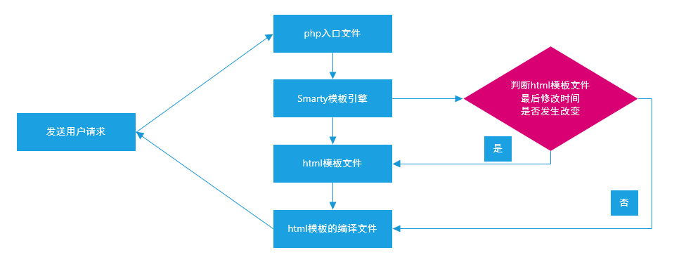

Smarty模板引擎
apache压力测试，在cmd中测试，ab -n 请求次数 -c 并发量 网址
一、模板引擎概述
1、为什么需要模板引擎
①混合式编程（HTML+PHP）
<table>
<tr>
<th>编号</th>
<th>产品标题</th>
<th>产品价格</th>
</tr>
<?php
while($row=mysql_fetch_assoc($res)){
?>
<tr>
<td><?php echo $row['id'];?></td>
<td><?php echo $row['title'];?></td>
<td><?php echo $row['price'];?></td>
</tr>
<?php
}
?>
</table>
混合式编程优点：执行效率高、运行速度快
混合式编程缺点：代码后期几乎没有任何维护性可言
②项目的开发流程
理想流程：
与客户沟通确认需求à编写需求分析à与客户沟通确认à设计师设计项目模板à切片并编程HTML代码à程序员编写动态代码并整合到HTML代码中à项目测试à正式上线。
现实流程：
与客户沟通确认需求à编写需求分析à与客户沟通确认à设计师设计项目模板à切片并编程HTML代码à程序员编写动态代码并整合到HTML代码中à项目测试à客户确认，不满意à设计师设计项目模板à程序员编写动态代码并整合到HTML代码中à…à正式上线。
2、什么是模板引擎
模板引擎的核心就是：把HTML代码与PHP代码强制分离的一套模板机制！
3、模板引擎应用项目汇总
①ThinkPHP框架（引入了模板引擎技术）
②CI、YII、Laravel框架
③DEDECMS内容管理系统
④ECSHOP商城系统…
4、模板引擎技术核心
模板引擎的原理：将模板（html）中的标签（{$title},{$content}）替换成具体对应值。
模板引擎原理代码如下：
demo02_muban.html//一、编写html代码
<body>
<div>{$title}</div>
<hr/>
<div>{$content}</div>
</body>
demo02_muban.php
header('Content-type:text/html;Charset=utf-8');//1设置响应头信息
$title='Smarty模板引擎';//2读取数据表，获取动态数据$title和$content
$content='Smarty缓存技术是Smarty中一种非常重要的技术，其速度要快于编译技术！';
$str=file_get_contents('demo02_muban.html');//3使用file_get_contents获取模板的内容
$str=str_replace('$title',$title,$str);//4替换$title和$content这两个模板标记
$str=str_replace('$content',$content,$str);
echo $str;//5输出模板内容
运行结果：
Smarty缓存技术
Smarty缓存技术是Smarty中一种非常重要的技术，其速度要快于编译技术！
二、封装自定义模板引擎
目的：通过自定义模板引擎（template类），实现标签的替换来理解模板引擎的运行原理
1、定义Template.class.php模板引擎类
首先我们先定义一个能替换模板（html）中标签（{$title}）值的类（Template）。
第一步：先定义一个数组：用来保存模板中的标签。因为标签可以有多个，所以使用数组。例如{$title}标签{$content}标签...
第二步：定义assign方法：用于分配变量到模板文件中。
第三步：定义display方法：实现对模板标签的替换，并显示输出模板内容
class Template {二、定义Template.class.php模板引擎类
private $data=array();//定义一个数组，用于保存模板中的标签
//定义一个assign方法，用于分配变量到模板文件
public function assign($name,$value){
$this->data[$name]=$value;//如$this->data['title']=$title;
}
public function display($spl){//定义display方法显示输出模板内容
$str=file_get_contents($spl);//使用该方法获取文件的内容
foreach ($this->data as $k => $v) {
//实现对模板标记的替换，$k='title',$title
$str=str_replace('{$'.$k.'}',$v,$str);
}
echo $str;//显示输出模板的内容
}
}
2、测试模板引擎是否可用
demo03_ceshi.html示例代码：
<body>//一、编写html代码
<div>{$title}</div>
<hr/>
<div>{$content}</div>
</body>
demo03_ceshi.php示例代码：
首先要引入我们之前定义的template类文件，然后实例化template类，调用类中的assign方法把变量分配到模板中，调用类中的display方法实现对模板标签的替换和显示输出。
//三、测试模板引擎是否可用
header('Content-type:text/html;Charset=utf-8');//1设置响应头
$title='Smarty模板引擎';//2读取数据表，获取动态数据$title和$content
$content='最好的模板引擎之一';
include_once('Template.class.php');//3引入模板引擎类
$smart=new Template();//4实例化模板引擎类
$smart->assign('title',$title);//5通过assign方法分配变量到模板文件
$smart->assign('content',$content);
$smart->display('Htest.html');//6通过display方法显示输出模板内容
运行结果：
Smarty缓存技术
Smarty缓存技术是Smarty中一种非常重要的技术，其速度要快于编译技术！
三、Smarty模板引擎
1、什么是Smarty模板引擎
smarty是一个基于PHP开发的PHP模板引擎。它提供了逻辑（PHP）与外在内容（HTML）的分离。
2、为什么要选择Smarty模板引擎
Smarty特点：①速度②编译型（编译文件）③缓存技术④插件技术⑤语句自由
不适合使用Smarty的场景：①小项目②实时更新的项目（股票的走势图…）
3、下载Smarty模板引擎
②解压Smarty模板引擎，如下所示：smarty-3.1.30/libs
4、部署Smarty模板引擎
①复制libs目录到项目的目录中
②更改libs文件夹名称为smarty
③创建一个templates文件夹作为smarty的模板目录,该目录下文件有bak,smarty,templates
html文件都放到这个文件夹下，如下图
php文件存放位置和templates文件平级，如下图
④创建php入口文件与html模板文件demo01.rumen.php
⑤编写php入口文件与html模板文件
demo01_rumen.php 示例代码：
//1、设置响应头信息
header("Content-type:text/html;Charset=utf-8");
//2、载入smarty入口文件
include_once("smarty/Smarty.class.php");
//3、实例化smarty类
$smarty=new Smarty;
//4、通过assign方法分配变量到模板文件
$tit='Smarty缓存技术';
$cont='Smarty缓存技术是Smarty中一种非常重要的技术，其速度要快于编译技术！';
$smarty->assign('title',$tit);
$smarty->assign('content',$cont);
//5、通过display方法显示输出模板内容到网页
$smarty->display('demo01.html');
templates/demo01.html示例代码：
<body>
<div>{$title}</div>
<hr/>
<div>{$content}</div>
</body>
运行结果：
Smarty缓存技术
Smarty缓存技术是Smarty中一种非常重要的技术，其速度要快于编译技术！
四、Smarty相关细节与执行流程
1、使用Smarty六步走
①设置响应头信息（防止出现乱码）
header(‘Content-type:text/html; charset=utf-8’);
②载入Smarty入口文件（载入Smarty类）
include ‘smarty/Smarty.class.php’);
③实例化Smarty类
$smarty = new Smarty();
④更改Smarty对象的默认属性（左右分隔符…）
$smarty->属性 = 属性值;
⑤分配变量到模板文件（assign方法）
$smarty->assign(‘标记名称’,’替换后的值’);
⑥显示输出模板的内容
$smarty->display(‘模板文件的名称’);
2、Smarty中的自动生成机制
当快速入门案例运行完毕后，在smarty项目目录中，会自动生成一个templates_c的文件夹，此文件夹就是smarty的编译目录（compile缩写，编译）
打开编译目录，如下所示：bbccf67a82bf0354d593b419a36ee0df79d30fb7_0.file.demo01.html.php
使用编辑器打开编译文件，如下图所示：
<body>
<div id='title'><?php echo $_smarty_tpl->tpl_vars['title']->value;?>
</div>
<hr />
<div id='content'><?php echo $_smarty_tpl->tpl_vars['content']->value;?>
</div>
</body>
3、Smarty的执行流程

4、验证Smarty的执行流程
①找到编译文件，如下图所示：
'file_dependency' =>
array (
'bbccf67a82bf0354d593b419a36ee0df79d30fb7' =>
array (
0 => 'E:\\CZwj\\wdc\\smart01\\templates\\demo01.html',
1 => 1487118526,
2 => 'file',
),
),
默认情况下，编译文件会自动记录模板文件的位置以及文件的最后修改时间！
②修改html模板文件(随便加个空格)
③重新访问php入口文件，编译文件如下图所示：
'file_dependency' =>
array (
'bbccf67a82bf0354d593b419a36ee0df79d30fb7' =>
array (
0 => 'E:\\CZwj\\wdc\\smart01\\templates\\demo01.html',
1 => 1656761129,
2 => 'file',
),
),
5、思考题
当我们在模板文件中，敲一个回车，然后删除回车，问模板文件是否发生改变呢？
答案：即使我们从观看的角度观察什么也没改变，但是当你敲一个回车的时候，模板文件已经添加一个回车操作。然后再删除回车，又有一个删除的操作。
6、Smarty中的相关属性
目的：修改在模板中（html）左右分解符的使用方式，为了避免与其他插件同时使用时发生冲突。比如jQuery,css中也会使用到{}这个符号。
left_delimiter ：左分界符，默认为左花括号{
right_delimiter ：右分界符，默认为右花括号}
demo02_shuxing.php示例代码：
//1、设置响应头信息
header('Content-type:text/html; charset=utf-8');
//2、载入Smarty入口文件
include 'smarty/Smarty.class.php';
//3、实例化Smarty类
$smarty = new Smarty();
//4、更改Smarty对象的默认属性
$smarty->left_delimiter='<{';
$smarty->right_delimiter='}>';
//5、通过assign方法分配变量到模板文件
$title = '更改左右分界符';
$content = '在Smarty中可以通过$smarty->left_delimiter或$smarty->right_delimiter来更改对象的默认属性';
$smarty->assign('title',$title);
$smarty->assign('content',$content);
//6、通过display方法显示输出模板内容
$smarty->display('demo02.html');
templates/demo02.html 示例代码：
<body>
<div id='title'><{$title}></div>
<hr/>
<div id='content'><{$content}></div>
</body>
7、Smarty中的相关方法
①assign方法
基本语法：$smarty->assign(‘标记名称’,’替换后的值’);主要功能：分配变量到模板文件。
②display方法
基本语法：$smarty->display(‘模板文件的名称’);主要功能：显示输出模板内容。
//4、通过assign方法分配变量到模板文件
$tit='Smarty缓存技术';
$cont='Smarty缓存技术是Smarty中一种非常重要的技术，其速度要快于编译技术！';
$smarty->assign('title',$tit);
$smarty->assign('content',$cont);
//5、通过display方法显示输出模板内容到网页
$smarty->display('demo01.html');
五、Smarty中的设计篇
1、模板注释
基本语法：{* 模板注释内容 *}
示例代码：
demo03.html 示例代码：
<body>
{* 模板注释 *}
<div id='title'>{$title}</div>
</body>
demo03_zhushi.php 示例代码：
//1、设置响应头信息
header('Content-type:text/html; charset=utf-8');
//2、载入Smarty入口文件
include 'smarty/Smarty.class.php';
//3、实例化Smarty类
$smarty = new Smarty();
//4、更改Smarty对象的默认属性
//5、通过assign方法分配变量到模板文件
$smarty->assign('title','Smarty注释');
//6、通过display方法显示输出模板内容
$smarty->display('demo03.html');
运行结果：
<body>
<div id='title'>Smarty注释</div>
s</body>
由上图可知，Smarty注释属于服务器端注释（给开发人员查看），其在模板解析时就会自动忽略，而不会显示在浏览器中。
2、模板中的变量
php代码端可以向模板中分配不同形式的变量：普通变量，数组变量，对象变量。
①普通变量
demo04_bianliang.php 示例代码：
//1、设置响应头信息
header('Content-type:text/html; charset=utf-8');
//2、载入Smarty入口文件
include 'smarty/Smarty.class.php';
//3、实例化Smarty类
$smarty = new Smarty();
//4、更改Smarty对象的默认属性
//5、通过assign方法分配普通变量到模板文件中
$smarty->assign('name','小强');
$smarty->assign('age',20);
$smarty->assign('address','北京市昌平区');
//分配数组变量到模板文件
$data = array('linux','apache','mysql','php'); //lamp
$smarty->assign('data',$data);
//分配对象变量到模板文件
$std = new stdClass();
$std->name = '旺财';
$std->age = 23;
$std->address = '北京市海淀区';
$smarty->assign('std',$std);
//分配常量
define("ROOT", getcwd());
//6、通过display方法显示输出模板的内容
$smarty->display('demo04.html');
在模板templates/demo04.html中显示如下图所示：
<body>
{* 普通变量 *}
{$name}
<hr />
{$age}
<hr />
{$address}
<hr />
{* 数组变量 *}
{$data[0]} - {$data[1]} - {$data[2]} - {$data[3]}
<hr />
{* 对象变量 *}
{$std->name}
<hr />
{$std->age}
<hr />
{$std->address}
</body>
运行结果：
小强
20
北京市昌平区
linux - apache - mysql - php
旺财
23
北京市海淀区
3、变量调节器
基本语法：
{$变量名称|调节器:参数1:参数2…}
主要功能：实现对模板中的变量进行格式化操作。
在Smarty模板文件中，一共有21种变量调节器，但是不需要完全掌握，重点掌握以下几种：
{$var|cat:var2} ：对两个字符串进行连接操作
{$var|date_format:”%H%M%S”}：对时间戳进行格式化操作
{$var|default:”value”} ：当变量为空或不存在时，使用默认值
{$var|escape} ：转码操作
{$var|lower}：把变量转化为小写形式
{$var|upper}：把变量转化为大写形式
{$var|nl2br}：把\n换行符转化为br标签（文件载入时常用）
{$var|replace:”aa”:”bb”} ：替换操作
{$var|string_format:”%d”} ：实现字符串格式化，%s，格式化为字符串，%d格式化为整型
{$var|strip_tags} ：去除html标签
{$var|truncate:30:”…”} ：字符串截取（如果截取中文，需要开启php_mbstring.dll扩展）
示例代码：
<body>
{* 变量调节器 *}
字符串连接：{$str1|cat:$str2}
<hr />
时间格式化：{$time|date_format:'%Y-%m-%d %H:%M:%S'}
<hr />
默认值：{$var|default:'这家伙很懒，什么都没有留下...'}
<hr />
转码：{$str3|escape}
<hr />
大写：{$str3|upper}
<hr />
nl2br：{$str4|nl2br}
<hr />
替换：{$str5|replace:'world':'smarty'}
<hr />
字符串格式化：{$str6|string_format:'%d'}
<hr />
去除html标签：{$str3|strip_tags}
<hr />
截取字符串：{$str5|truncate:8:'...'}
</body>
4、系统变量
- {$smarty.get.变量名称}：相当于PHP原生代码中的$_GET
- {$smarty.post.变量名称}：相当于PHP原生代码中的$_POST
- {$smarty.cookies.变量名称 }：相当于PHP原生代码中的$_COOKIE
- {$smarty.session.变量名称 }：相当于PHP原生代码中的$_SESSION
- {$smarty.now}：获取当前系统的时间的时间戳，类似time()函数
以上系统变量，可以在Smarty模板文件中直接使用，其系统变量都是以{$smarty}打头的！
php实例代码：
session_start();
//1、设置响应头信息
header('Content-type:text/html; charset=utf-8');
//2、载入Smarty入口文件
include 'smarty/Smarty.class.php';
//3、实例化Smarty对象
$smarty = new Smarty();
//4、更改Smarty对象的默认属性
//5、通过assign方法分配变量到模板文件
$_SESSION['adminuser'] = 'admin';
//6、通过display方法显示输出模板的内容
$smarty->display('demo06.html');
示例代码：
<body>
get请求参数：{$smarty.get.page}
<hr />
session数据：{$smarty.session.adminuser}
<hr />
获取当前时间的时间戳：{$smarty.now|date_format:'%Y-%m-%d %H:%M:%S'}
</body>
运行效果：
get请求参数：10
session数据：admin
获取当前时间的时间戳：2017-02-15 17:29:29
5、Smarty中的内建函数
①foreach内建函数
基本语法：
{foreach from=$数组变量 item=内容 name=foreach名称 key=索引下标}
{foreachelse}当要遍历的数组元素为空时，系统会自动执行foreachelse
{/foreach}
主要功能：实现对数组元素的遍历！
使用foreach遍历一维数组：
demo07_foreach.php示例代码：
//1、设置响应头信息
header('Content-type:text/html; charset=utf-8');
//2、载入Smarty入口文件
include 'smarty/Smarty.class.php';
//3、实例化Smarty对象
$smarty = new Smarty();
//4、更改Smarty对象的默认属性
//5、通过assign方法分配变量到模板文件
$lamp = array('linux','apache','mysql','php');
$smarty->assign('lamp',$lamp);
$persons = array(
array('name'=>'刘备','age'=>46,'email'=>'liubei@whereit.cn'),
array('name'=>'关羽','age'=>43,'email'=>'guanyu@whereit.cn'),
array('name'=>'张飞','age'=>40,'email'=>'zhangfei@whereit.cn')
);
$smarty->assign('persons',$persons);
$smarty->assign('data',array());
//6、通过display方法显示输出模板内容
$smarty->display('demo07.html');
<body>
{* 遍历一维数组 *}
{foreach from=$lamp item='value' name='fr'}
{$smarty.foreach.fr.iteration}、{$value}
{/foreach}
当前共有{$smarty.foreach.fr.total}个元素
<hr />
{* 遍历二维数组 *}
{foreach from=$persons item='row' key='k'}
{$k}：{$row['name']}-{$row['age']}-{$row['email']}
<hr />
{/foreach}
<hr />
{*foreach的另一种写法*}
{foreach $persons as $k=>$v}
{$k}:{$v.name} - {$v.age} - {$v.email}
<br />
{/foreach}
<hr />
{* foreachelse的使用 *}
{foreach from=$data item='value'}
{$value}
{foreachelse}
暂未查询到任何数据...
{/foreach}
</body>
1、linux 2、apache 3、mysql 4、php 当前共有4个元素
0：刘备-46-liubei@whereit.cn
1：关羽-43-guanyu@whereit.cn
2：张飞-40-zhangfei@whereit.cn
0:刘备 - 46 - liubei@whereit.cn
1:关羽 - 43 - guanyu@whereit.cn
2:张飞 - 40 - zhangfei@whereit.cn
暂未查询到任何数据...
附加属性name的使用：
$smarty.foreach.name.index：获取循环的索引下标
$smarty.foreach.name.iteration：获取当前是第几次循环
$smarty.foreach.name.first：如果第一次循环时，此值为true
$smarty.foreach.name.last：如果最后一次循环时，此值为true
$smarty.foreach.name.total：获取循环的总次数
②include内建函数
基本语法：{include file=’要包含文件的名称’ assign=’var’ …}
主要功能：实现对文件的包含操作。
示例代码：
templates/demo08.html示例代码：
<body>
{include file='header.html' title='哈哈哈'}
<div>内容</div>
{include file='footer.html' copyright='http://www.wdc.com'}
</body>
templates/header.html示例代码：
<div>{$title}</div>
templates/footer.html示例代码：
<div>{$copyright}</div>
运行结果：
哈哈哈
内容
http://www.wdc.com
③insert内建函数：实现对函数的扩展
基本语法：{insert name=’func’ assign=’var’ …}
特别注意：如果采用insert扩展Smarty函数，其函数的命名必须使用insert_函数名称，否则无法使用insert进行载入！
demo09_insert.php示例代码：
//1、设置响应头信息
header('Content-type:text/html; charset=utf-8');
//2、载入Smarty入口文件
include 'smarty/Smarty.class.php';
//3、实例化Smarty对象
$smarty = new Smarty();
//4、更改Smarty对象的默认属性
function insert_func($args) {
echo $args['title'].date('Y-m-d H:i:s');
}
//5、通过assign方法分配变量到模板文件
//6、通过display方法显示输出模板内容
$smarty->display('demo09.html');
demo.html 示例代码：
<body>
{insert name='func' title='当前系统时间：'}
</body>
运行结果：当前系统时间：2020-12-13 19:05:05
④if…elseif…else.../if内建函数（分支条件）
基本语法：
{if分支条件}
{elseif 分支条件}
{else 语句}
{/if}
示例代码：
<body>
{if $day == 1}
星期一
{elseif $day == 2}
星期二
{elseif $day == 3}
星期三
{elseif $day == 4}
星期四
{elseif $day == 5}
星期五
{else}
周末
{/if}
</body>
⑤ldelim与rdelim左右分界符
主要功能：输出左右花括号。
<body>
Smarty模板引擎是目前业界最著名的模板引擎之一，其基本语法：{ldelim}$变量名称{rdelim}
</body>
运行结果： Smarty模板引擎是目前业界最著名的模板引擎之一，其基本语法：{$变量名称}
⑥literal内建函数
<literal>
<style type="text/css">
#content{width:400px;height:200px;border:1px #ccc solid;}
</style>
</literal>
主要功能：把其标签中的内容当做普通文本直接输出，适用于css与js标签！
在smarty中，与samrty的｛｝区别，正常输出css或js解析的内容。
⑦section内建函数
基本语法：
{section loop=要遍历的数组 name=名称start=开始 step=步阶 max=最大值}
loop：确认数组中有多少个元素，section就会执行多少次
name：每次循环时，系统会将索引下标放入name中，数字索引，从0开始
{sectionelse}
当要遍历的数组为空时，系统会自动执行sectionelse
{/section}
<body>
{* 使用section遍历一维数组 *}
{section loop=$lamp name='sec1'}
{$smarty.section.sec1.iteration}、{$lamp[sec1]}
{/section}
当前共有{$smarty.section.sec1.total}个元素
<hr />
{* 使用section遍历二维数组 *}
{section loop=$persons name='sec2'}
{$persons[sec2]['name']}-{$persons[sec2]['age']}-{$persons[sec2]['email']}
<hr />
{/section}
{* 附加属性的使用 *}
{section loop=$lamp name='sec3' start=0 step=1 max=2}
{$lamp[sec3]}
{/section}
</body>
//1、设置响应头信息
header('Content-type:text/html; charset=utf-8');
//2、载入Smarty入口文件
include 'smarty/Smarty.class.php';
//3、实例化Smarty对象
$smarty = new Smarty();
//4、更改Smarty对象的默认属性
//5、通过assign方法分配变量到模板文件
$lamp = array('linux','apache','mysql','php');
$smarty->assign('lamp',$lamp);
$persons = array(
array('name'=>'刘备','age'=>46,'email'=>'liubei@whereit.cn'),
array('name'=>'关羽','age'=>43,'email'=>'guanyu@whereit.cn'),
array('name'=>'张飞','age'=>40,'email'=>'zhangfei@whereit.cn')
);
$smarty->assign('persons',$persons);
$smarty->assign('data',array());
//6、通过display方法显示输出模板内容
$smarty->display('demo13.html');
section中的内置变量：
{$smarty.section.name.index}：获取循环索引
{$smarty.section.name.index_prev}：获取上一次索引，如果索引为0，此值为-1
{$smarty.section.name.index_next}：获取下一次索引，如果索引为0，此值为1
{$smarty.section.name.iteration }：当前是第几次循环，默认从1开始
{$smarty.section.name.first|last}：第一次或最后一次循环时条件为真
{$smarty.section.name.total}：循环的总次数
示例代码：
问题：foreach循环与section循环有何区别呢？
答：①两者都可以实现对数组元素的遍历
②foreach既可以对索引型数组也可以对关联型数组进行遍历
③section只能实现对索引下标从0开始且连续的索引型数组进行遍历
④foreach内建函数与php中的foreach类似，section与php中的for循环类似
补充：section的一点优势，section可以一次循环多个索引数组，但是多个数组内的元素个数必须相同。
6、Smarty中的自定义函数
① debug函数
基本语法：{debug}
主要功能：实现对模板中的变量进行调试功能,示例代码：
<body>
{debug}
</body>
运行结果：

②html_checkboxes函数：生成复选项
基本语法：
{html_checkboxes values=$cust_ids checked=$customer_id output=$cust_names separator="<br />"}
参数说明：
values ：要求参数是一个数组，每个选项的value值
checked ：要求参数是一个数组，选中的复选框
output ：要求参数是一个数组，每个选项的输出文本
separator ：元素与元素之间的分隔符
③html_options函数：生成下拉选项，详见如下实例
基本语法：
<select>
{html_options values=$cust_ids selected=$customer_id output=$cust_names}
</select>
参数说明：
values ：要求是一个数组，代表下拉选框的value值
selected ：要求是一个数组，代表选中的选项
output ：要求是一个数组，代表选框的文本信息
④ html_radios函数：生成单选框
基本语法：
{html_radios values=$cust_ids checked=$customer_id output=$cust_names separator="<br />"}
参数说明：
values ：要求参数是一个数组，每个选项的value值
checked ：要求参数是固定值，代表选中的单选框
output ：要求参数是一个数组，每个选项的输出文本
separator ：元素与元素之间的分隔符
html_checkboxes、html_options、html_radios 示例代码：
<body>
{* 生成复选框 *}
{html_checkboxes name='hobby' values=$values checked=$checked output=$output separator='<br />'}
<hr />
{* 生成下拉选框 *}
<select name='hobby'>
{html_options values=$values selected=$checked output=$output}
</select>
<hr />
{* 生成下拉框的另一种写法*}
{html_options name='hobby' options=$output selected=$checked}
<hr />
{* 生成单选框 *}
{html_radios name='hobby' values=$values checked=2 output=$output separator='<br />'}
</body>
//1、设置响应头信息
header('Content-type:text/html; charset=utf-8');
//2、载入Smarty入口文件
include 'smarty/Smarty.class.php';
//3、实例化Smarty对象
$smarty = new Smarty();
//4、更改Smarty对象的默认属性
//5、通过assign方法分配变量到模板文件
$values = array(0,1,2);
$checked = array(1);
$output = array('吃饭','睡觉','打豆豆');
$smarty->assign('values',$values);
$smarty->assign('checked',$checked);
$smarty->assign('output',$output);
//6、通过display方法显示输出模板内容
$smarty->display('demo15.html');
html_checkboxes、html_options、html_radios最终运行结果：

六、Smarty中的程序篇
1、Smarty中的常量
SMARTY_DIR：Smarty模板目录（学习Smarty设计思想）
Smarty源代码：
if (!defined('DS')) {
define('DS', DIRECTORY_SEPARATOR); //路径分隔符Windows：/\ Linux：/
}
if (!defined('SMARTY_DIR')) {
define('SMARTY_DIR', dirname(__FILE__) . DS); //返回绝对路径
}
2、Smarty中的变量
- $left_delimiter：设置Smarty的左分隔符
- $right_delimiter：设置Smarty的右分隔符
- $caching：开启缓存，布尔类型，true代表开启，false代表关闭，默认为false
- $cache_lifetime：缓存的生命周期
示例代码：
$smarty->left_delimiter='<{';
$smarty->right_delimiter='>}';
3、Smarty中的常用方法
- assign：分配变量到模板文件
- append：把变量以数组的形式分配到模板文件中
- display：显示输出模板内容
- fetch：获取模板文件的内容，但不输出
- templateExists ：判断模板文件是否存在
append示例代码：
//1、设置响应头信息
header('Content-type:text/html; charset=utf-8');
//2、载入Smarty入口文件
include 'smarty/Smarty.class.php';
//3、实例化Smarty对象
$smarty = new Smarty();
//4、更改Smarty对象的默认属性
//5、通过append方法分配变量到模板文件
$smarty->append('data','北京');
$smarty->append('data','上海');
$smarty->append('data','广州');
$smarty->append('data','深圳');
$str=$smarty->fetch('demo16.html');
echo $str;
html实例代码：
<body>
{foreach from=$data item='value'}
{$value}
{/foreach}
</body>
运行结果：北京 上海 广州 深圳
fetch示例代码：特别注意：fetch方法与display方法基本一致，只不过fetch方法没有输出功能而已！
templateExists示例代码：如果调用的模板不存在，就输出定义好的内容。
//6、通过display方法显示输出模板内容
if($smarty->templateExists('demo.html')) {
$smarty->display('demo.html');
} else {
echo '系统正在维护中，请稍后再试...';
}
运行结果：系统正在维护中，请稍后再试...
七、Smarty中的缓存技术
1、缓存技术介绍
在项目开发中，一共存在三种常用技术：①编译技术<②缓存技术<③静态化技术
2、缓存技术应用场景
Smarty缓存并不是任何应用场景都可以使用的一种技术，只有在项目上线后，其模板文件以及动态数据不需要经常改变时，才适合使用缓存技术。
3、开启Smarty缓存
- $smarty->setCacheDir($cache_dir)：设置缓存目录，默认为cache文件夹
- $smarty->caching=true：是否开启缓存，true代表开启（最重要）
- $smarty->cache_lifetime=3600：设置缓存的生命周期
demo17_cache.php示例代码：
//1、设置响应头信息
header('Content-type:text/html; charset=utf-8');
//2、载入Smarty入口文件
include 'smarty/Smarty.class.php';
//3、实例化Smarty对象
$smarty = new Smarty();
//4、更改Smarty对象的默认属性
$smarty->caching = true; //开启缓存功能
$smarty->cache_lifetime = 3600; //设置缓存文件的生命周期为1小时
//5、通过assign方法分配变量到模板文件
$smarty->assign('title','Smarty缓存技术');
$smarty->assign('content','Smarty缓存技术是Smarty中一种非常重要的技术，其速度要快于编译技术！');
//6、通过display方法显示输出模板内容
$smarty->display('demo17.html');
demo17.html示例代码：
<body>
<div>{$title}</div>
<hr />
<div>{$content}</div>
</body>
运行结果：
Smarty缓存技术
Smarty缓存技术是Smarty中一种非常重要的技术，其速度要快于编译技术！
4、缓存中的自动生成
在以上案例运行完毕后，smarty项目目录如下所示：smart\cache
打开cache文件夹，如下所示：0a157d29e733e379e3ace6f048ba57e1d6c059aa_0.file.demo17.html.cache.php
打开缓存文件后，如下图所示：
<body>
<div>Smarty缓存技术</div>
<hr />
<div>Smarty缓存技术是Smarty中一种非常重要的技术，其速度要快于编译技术！</div>
</body>
所以由上可知，为什么缓存文件要快于编译文件，主要原因在于缓存文件，其缓存的是最终要显示的数据！
5、探究缓存文件从何而来呢？
思考：①缓存文件时从模板文件直接生成的？ ②缓存文件时从编译文件直接生成的？
答：缓存文件是由编译文件直接生成的！
6、Smarty的完整执行流程

7、Smarty缓存的作用
①加快项目的访问速度
②减少服务器的压力
③减少对数据库服务器的读取
8、使用Smarty缓存减少数据库服务器的读取
要用到的知识点：is_Cached函数，判断缓存文件是否存在
基本语法：$smarty->isCached(“tpl.tpl”);
demo18_mysql.php示例代码：
//1、设置响应头信息
header('Content-type:text/html; charset=utf-8');
//2、载入Smarty入口文件
include 'smarty/Smarty.class.php';
//3、实例化Smarty对象
$smarty = new Smarty();
//4、更改Smarty对象的默认属性
$smarty->caching = true; //开启缓存
$smarty->cache_lifetime = 3600; //设置缓存文件的生命周期
//7、判断缓存文件是否存在
if($smarty->isCached('demo18.html')) {
$smarty->display('demo18.html');
exit;
}
//5、通过assign方法分配变量到模板文件
echo 'connect mysql ...';
echo '<hr />';
mysql_connect('localhost','root','mysql');
mysql_query('use org7188');
mysql_query('set names utf8');
//组装SQL语句
$sql = "select * from 188_archives where id = 510";
//执行SQL语句
$res = mysql_query($sql);
//解析结果集
$row = mysql_fetch_assoc($res);
$smarty->assign('title',$row['title']);
$smarty->assign('description',$row['description']);
//6、通过display方法显示输出模板内容
$smarty->display('demo18.html');
9、清除Smarty模板缓存
问题：为什么要清除缓存？
答：有些情况下，缓存可能会阻止我们实时获取数据表中的数据，这个时候就需要使用清除缓存。要用到的知识点：
$smarty->clearCache(“tpl.tpl”); //清除某个模板页面的缓存
$smarty->clearAllCache(); //清除所有缓存
特别注意：以上两种方法，可以不需要caching，也可以实现清除！
demo19_clearCache.php
$smarty->clearCache('demo19.html'); //清除demo19.html模板的缓存
//$smarty->clearAllCache(); //清除所有模板文件的缓存
10、Smarty中的局部缓存
①为什么需要局部缓存

如上图所示：在有些页面中，如文章或产品的详细页面，有些数据如浏览次数是不需要进行缓存的，但是如文章标题、作者、
发布时间以及内容又需要进行缓存，我们把这种技术就称之为“局部缓存技术”。
②要用到的知识点，基本语法：
$smarty->assign(“var”, “value”, true)
使用assign方法的第三个参数，让变量不缓存！
{$var nocache=true}
在模板文件中，使用nocache属性，让变量不缓存！
{nocache}{/nocache}
让某个区域内的变量都不缓存，可以使用nocache标签
示例代码：
$smarty->display('hits',201,true);//1在php文件中使用assign方法的第三个参数，让变量不缓存！
<body>
{nocache}//3某个区域内的变量都不缓存
<div>{$title}</div>
<hr />
<!-- 浏览次数：{$hits nocache=true} //2在模板文件中，使用nocache属性，让变量不缓存！-->
浏览次数：{$hits}
<hr />
<div>{$description}</div>
{/nocache}
</body>
11、Smarty中的单页面多缓存
应用场景：根据文章的id显示文章的详细内容（详细内容页是固定的，每次只有参数不同）
要用到的知识点，基本语法：
$smarty->caching=true
$smarty->display(“tpl”, “缓存标识”)
demo21_danCache.php示例代码：
//1、设置响应头信息
header('Content-type:text/html; charset=utf-8');
//2、载入Smarty入口文件
include 'smarty/Smarty.class.php';
//3、实例化Smarty对象
$smarty = new Smarty();
//4、更改Smarty对象的默认属性
$smarty->caching = true;
//5、通过assign方法分配变量到模板文件
mysql_connect('localhost','root','mysql');
mysql_query('use org7188');
mysql_query('set names utf8');
//组装SQL语句
$id = $_GET['id'];
$sql = "select * from 188_archives where id = $id";
//执行SQL语句
$res = mysql_query($sql);
//解析结果集
$row = mysql_fetch_assoc($res);
$smarty->assign('title',$row['title']);
$smarty->assign('description',$row['description']);
$smarty->assign('hits',202); //设置文章的次数
//6、通过display方法显示输出模板内容
$smarty->display('demo21.html',$id);//根据文章的id显示文章的详细内容
运行结果：通过传递的ID不同生成不同的缓存文件
12、Smarty中的缓存集合
应用场景：根据产品的类别以及分页的页面显示产品的列表信息（列表页是固定的，每次只有参数不同且参数是多个）
要用到的知识点，基本语法：
$smarty->caching=true;
$smarty->display(“tpl”, $id1.”|”.$id2)
demo22_jiheCache.php 示例代码：
//1、设置响应头信息
header('Content-type:text/html; charset=utf-8');
//2、载入Smarty入口文件
include 'smarty/Smarty.class.php';
//3、实例化Smarty对象
$smarty = new Smarty();
//4、更改Smarty对象的默认属性
$smarty->caching = true;
//5、通过assign方法分配变量到模板文件
//组装SQL语句
$cateid = $_GET['cateid'];
$page = $_GET['page'];
$sql = "select * from goods where cateid={$cateid} and page={$page}";
$smarty->assign('sql',$sql);
//6、通过display方法显示输出模板内容
$smarty->display('demo22.html',$cateid.'|',$page);
运行结果：通过传值的不同生成不同的缓存文件
八、课程总结
1、课程总结
①模板引擎概述
什么是模板引擎，底层原理，封装了一个自定义的模板引擎
②Smarty模板引擎
什么是Smarty、Smarty的特点与不适用Smarty的应用场景、部署Smarty六步走
设置响应头信息
载入Smarty入口文件
实例化Smarty类
更改Smarty对象的默认属性
通过assign方法分配变量到模板文件
通过display方法显示输出模板内容
③Smarty的自动生成与执行流程
编译技术
相关属性left_delimiter、right_delimiter
相关方法assign、display
④设计篇
模板注释、变量、变量调节器{$var|变量调节器:参数…}、系统变量{$smarty}
内建函数
foreach、include、insert、if分支、ldelim/rdelim、literal、section
smarty中的自定义函数
debug、html_checkboxes、html_options、html_radios
⑤程序篇
SMARTY_DIR、DS
left_delimiter、right_delimiter
assign、display、append、fetch、templateExists
⑥缓存技术
开启缓存以及设置缓存的生命周期
缓存文件是从编译文件直接生成的
加快项目的访问速度
减少服务器的压力
减少数据库服务器的读取is_Cached
清除缓存clearCache、clearAllCache
局部缓存assign(‘var’,’value’,true)、{$var nocache=true}、{nocache}…{/nocache}
单页面多缓存display(‘demo.html’,$id);
缓存集合display(‘demo.html’,$cateid.’|’.$page…);